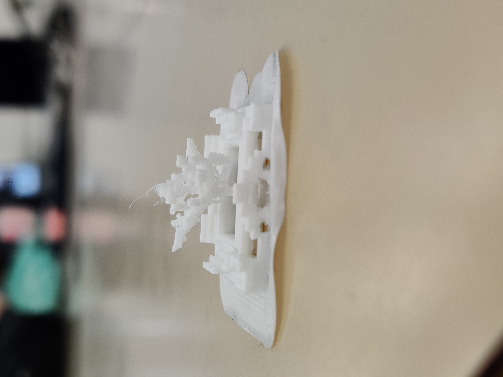
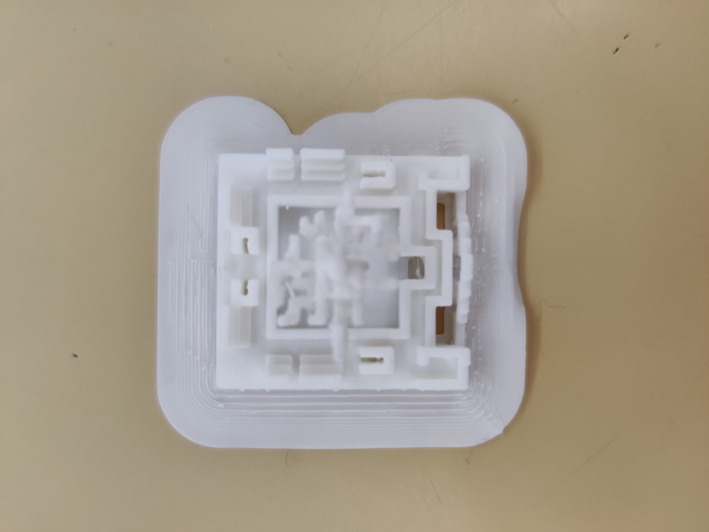
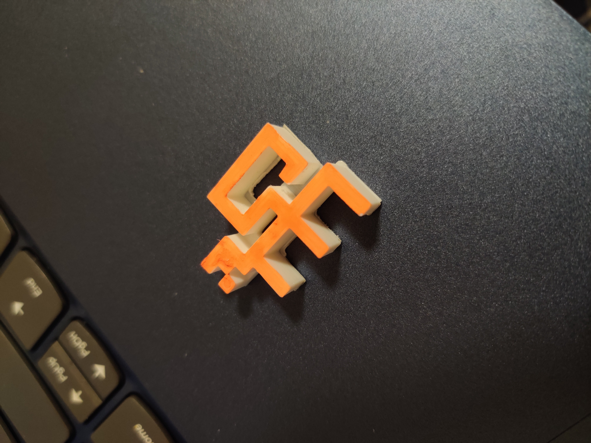

The first two pictures are my first attempt printing the model from Minecraft. It does not look like what I expected it to be because there is no color on it. To minimize the printing time, we usually print the model as small as possible, but it means that it is hard to apply color on the printed piece. For my second attempt (third picture), it is an Om symbol, which stands for inner peace inside each of us.
You can find the Minecraft model here: Minecraft 
3D printing 1st attempt frontview
3D printing 1st attempt sideview
3D printing 2nd attempt: Om symbol
Back to landing page